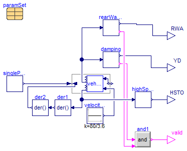

| Name | Description |
|---|---|
| SingleLaneChange |

Extends from OpenPBS.Manoeuvres.SingleLaneChange.
| Type | Name | Default | Description |
|---|---|---|---|
| Frequency | freqHz | 0.4 | Frequency of lateral acceleration in ground coordinates [Hz] |
| Length | width | 4.5 | Width of lane change maneuver [m] |
| Velocity | vx | 80/3.6 | Longitudinal velocity [m/s] |
| Type | Name | Description |
|---|---|---|
| output RealOutput | RWA | Rearward amplification |
| output RealOutput | YD | Yaw damping |
| output BooleanOutput | valid | True if calculations were completed |
| output RealOutput | HSTO |